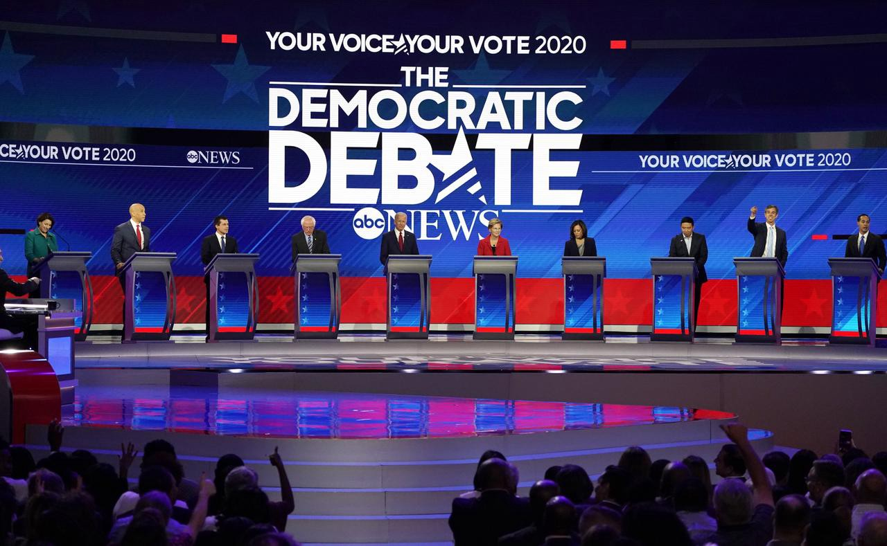

Shedding Light on DNC-Approved Polls
The second in a series of articles examining polls and other issues related to the Democratic presidential primaries.
Article originally published here.
To anyone following the Democratic primaries, the impact polls have on a candidate's success can hardly be understated. They play a critical role in shaping the narrative around a campaign and grant access to the all-important national debate stage. Since participation in these debates hinges on meeting certain polling criteria, it’s unsurprising that some candidates struggling to qualify have criticized this process as unfairly excluding them. A central point of contention against the Democratic National Committee’s (DNC) criteria is that only poll results from certain approved entities are considered for debate qualification. This seemed like an interesting question to explore so I dug into the data, looking for any obvious signs of bias. Below you’ll find a summarized analysis of approved entities as well as an examination of two key criticisms that hopefully sheds light on this aspect of the primary process.
Who Are the DNC-Approved Polling Entities?
The following is a list of fifteen entities whose polls count towards qualification for the November debate (those in bold have yet to release any primary polls):
Associated Press, ABC News/Washington Post, CBS News/YouGov, CNN, Des Moines Register, Fox News, Monmouth University, National Public Radio, NBC News/Wall Street Journal, NBC News/Marist, New York Times, Quinnipiac University, University of New Hampshire, USA Today/Suffolk University, Winthrop University.
*Note: they are essentially the same entities approved in the previous round of debate qualification.
What Are Their Polling Methods?
Of the entities who released polls (11 out of 15), all but one reached participants through phone calls (using a mixture of cell and landline numbers); CBS/YouGov reached participants via online panels. Part 1 of this series examines the polling methods of all entities in greater detail.
How Frequently Do They Poll?
DNC-approved polls account for about 16% of all primary polls released (based on FiveThirtyEight’s collection). As the chart below shows, on average, twelve DNC-approved polls have been conducted each month since June.
What Regions Do They Poll?
About half of DNC-approved polls are national while the other half is split between the four early primary states (Iowa, New Hampshire, South Carolina, Nevada). Monthly national poll counts tend to be more stable than monthly state poll counts, as is evident below.
A common complaint is that the primary timeline directly conflicts with the DNC’s polling criteria. Since primaries are staggered between February and June, campaigns are incentivized to invest more heavily in early primary states as they compete to earn delegate support. This is especially true for smaller campaigns with fewer resources. However, focusing their efforts on a smaller number of states generally translates to weaker performance in national polls, which comprise about half of approved polls. As a result, the number of debate-qualifying polls is effectively halved. The alternative of broadening their efforts nationally isn’t so attractive, though, since that would likely spread their campaign too thin, leaving them even worse-off. The DNC would probably point out that candidates can also qualify for the debates by receiving higher poll numbers in fewer early primary state polls, as is outlined in November’s debate criteria below. Whether that is a reasonable second path to qualification is up for debate, but it does seem like a decent option for smaller campaigns to take advantage of.
Qualifying for the November Debate
Qualification for the November debate stipulates that candidates receive 3% or higher in at least 4 polls released between September 13th and a week before the debate (or 5% or higher in two early primary states). These polls must be either national or single-state polls in Iowa, New Hampshire, South Carolina, and/or Nevada. As of this writing, ten qualifying polls have been released, with the top five candidates (Biden, Warren, Sanders, Harris, Buttigieg) securing their qualification. Booker, Steyer, and Yang are likely to join them, needing just one more poll of 3% or higher, while the remaining candidates are in real danger of missing out with one or zero qualifying polls to their names. Results for the qualifying polls released thus far are presented below:
Do DNC-Approved Polls Favor Certain Candidates?
To answer this question I compared the averages of approved and non-approved poll results to see if any notable discrepancies appeared in the data. As the table below shows, there was no significant difference between the results for most candidates, removing any suspicion of potential bias. However, Beto O’Rourke’s figures stick out as a little unusual, with his non-approved poll average being much lower than his average in approved polls. I’m not yet sure what to make of this.
*Note: values in the “Difference” column are likely net negative as a result of non-approved polls including fewer candidates, on average, thereby slightly boosting poll numbers for most candidates.
Wrapping Up:
After exploring the data from a few different angles it seems the two main concerns regarding the DNC’s polling criteria have been sufficiently addressed. In terms of primary schedules conflicting with the fact that half of approved polls are national, that criticism is weakened by the DNC’s criteria allowing qualification through fewer polls with stronger results in the early primary states. And with respect to any suspicion that DNC-approved polls might favor particular candidates, the data show relatively consistent results with non-approved polls. The only candidate with legitimate concern is Beto O’Rourke, whom the DNC’S choice of approved polling entities has significantly disadvantaged.
Major Takeaways on DNC-Approved Polls:
- All but one are conducted by phone (cell and landline)
- An average of 12 polls have been conducted each month (since June)
- About half are national and half in early primary states
- They don’t noticeably favor any particular candidates, though Beto O’Rourke appears to be adversely affected
*Any comments, corrections, suggestions, etc. are always welcome. The code and details behind my analysis can be found here.